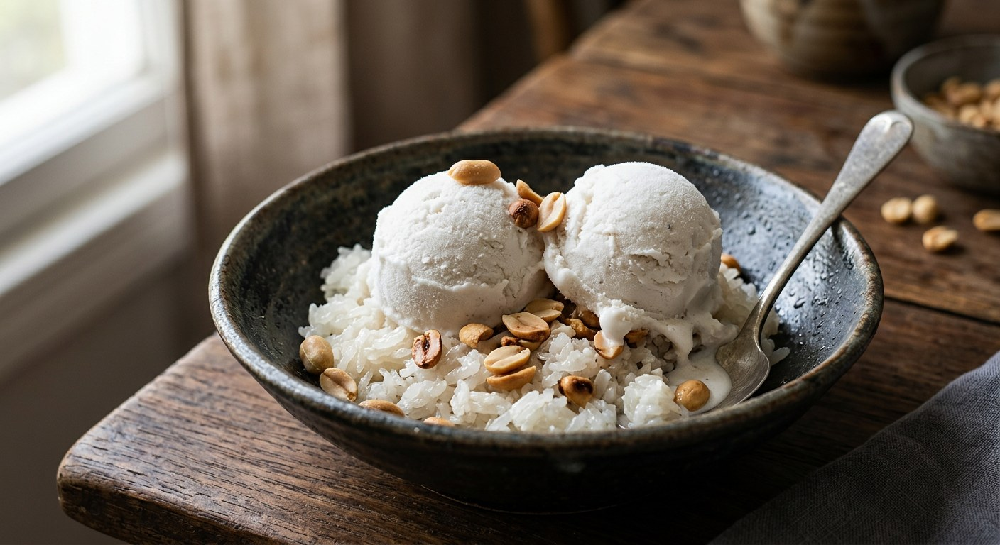

Coconut milk simmered with sugar and cornflour until it barely thickens, frozen, re-blended — Thailand's street-cart ice cream, eaten with roasted peanuts, black beans and sticky rice.

ไอติม is Thai for ice cream, borrowed from English, and กะทิ is coconut milk — the name tells you the whole dish. Before electric machines reached the country, the street version was churned by hand in a steel cylinder packed in salted ice, and the base it held was not cream and eggs but coconut milk. Aroifin's classic recipe keeps that base to the letter: coconut milk, sugar, salt, cornflour and vanilla — cooked gently until it thickens, frozen, re-blended, frozen again.
The cook matters more than the freeze. Aroifin's rule is to dissolve the sugar, salt and cornflour into the milk before the pot sees any heat, then hold it at a low flame — the moment you boil it hard the coconut milk แตกมัน, splits into oil and water, and the ice cream comes out grainy. Kapook's no-machine version scales the same idea up to a litre of pasteurised coconut milk, and both sources agree the blend between freezes is what replaces the churn.
But the street identity lives in the toppings. The classic cart serves ไอติมกะทิถั่วดำ — black beans in the base, poured into moulds on sticks or knotted into little plastic bags — alongside candied pumpkin, ลูกชิด (palm seed), barley, corn and roasted peanuts, often scooped into a bread roll or a hollowed young coconut. TrueID's ครัวพิศพิไล version makes exactly that: black beans soaked overnight, their cooking water stirred into the base with sweetened condensed milk, frozen around a stick. And Kapook's machine version shows the dish in its fancier dress — coconut water and pandan leaves in the base, egg white and whipping cream churned to a custard.
| Thai | English | Amount |
|---|---|---|
| หัวกะทิ / กะทิกล่อง | Coconut cream (or full-fat coconut milk) | 500 ml |
| น้ำตาลทราย | Sugar | 100 g |
| เกลือ | Salt | ½ tsp |
| แป้งข้าวโพด | Cornflour | 3 tbsp |
| กลิ่นวนิลา | Vanilla | 1 tsp |
| ถั่วลิสงคั่ว | Roasted peanuts, to top | to serve |
| ข้าวเหนียวมูน ถั่วแดง ลูกเดือย ลูกชิด ข้าวโพด | Khao niew mun, red beans, barley, luk chit (palm seed), corn — the classic sides | to serve |
The black-bean stick (TrueID, ครัวพิศพิไล): 500 ml coconut cream, 200 g sweetened condensed milk, 120 g dried black beans soaked overnight and boiled soft, 300 ml of the bean water, 35 g cornflour, ½ tsp salt, 1 tsp vanilla — cooked, strained, poured over beans in moulds with sticks, frozen overnight. The smallest batch (TrueID, munpurple): 250 ml coconut milk, 50 ml plain milk, 30 g sugar, ¼ tsp salt, 1½ tbsp cornflour — the only source that adds fresh milk. The churned version (Kapook): 1 cup coconut water simmered with 3–4 pandan leaves, 3 cups coconut milk, 1¼ cups sugar, ½ tsp salt, 1 egg white whipped with the remaining sugar and 1½ cups whipping cream, plus ⅛ tsp xanthan gum if you like — churned in a machine or frozen 3–4 hours.
The thickener. Cornflour is near-universal — Aroifin, Wongnai, both TrueID recipes and Kapook's no-machine version all use it. Kapook's machine version drops it entirely and relies on egg white and whipping cream (with xanthan gum as an optional extra).
The sweetener. Four sources sweeten with granulated sugar. TrueID's ครัวพิศพิไล black-bean version uses sweetened condensed milk instead — and stirs the bean cooking water into the base, where everyone else uses plain milk or none.
Milk or no milk. Only TrueID's munpurple recipe adds fresh milk (50 ml to 250 ml of coconut milk). The other four keep the base purely coconut.
The salt. Aroifin and ครัวพิศพิไล use ½ tsp; Kapook and munpurple use ¼ tsp. Wongnai's home recipe skips salt altogether.
The freeze. TrueID's two recipes freeze once and scoop. Aroifin and Wongnai freeze, re-blend, and refreeze — the smoother street texture. Kapook's machine version churns, with a plain 3–4 hour freeze as its fallback.
Flavouring the base. Kapook's churned version is the only one that infuses the base with coconut water and pandan leaves before the milk goes in; the classic recipes flavour with vanilla alone.
This recipe is translated from the following Thai-language sources. Where they disagree, we've said so.
1. Aroifin — "วิธีทำ ไอติมกะทิ สูตรโบราณ ทำเองง่ายที่บ้าน ทำขายก็ดี" (the recipe used here) — aroifin.com
2. Kapook — "4 เมนูไอศกรีมกะทิสด สูตรใช้และไม่ใช้เครื่อง อร่อยหอมหวานคลายร้อน" (the no-machine and churned versions) — cooking.kapook.com
3. TrueID Food — "ไอศกรีมถั่วดำ ไอติมกะทิโบราณ ทำง่ายสุดๆ" by ครัวพิศพิไล (the black-bean stick) — food.trueid.net
4. TrueID Food — "ไอติมกะทิสูตรโฮมเมด ไม่ต้องใช้เครื่องปั่น" by munpurple (the smallest batch) — food.trueid.net
5. Wongnai — "สูตร ไอติมกะทิแบบทำทานเองในบ้าน" by ann_andy79 (the home re-blend method) — wongnai.com